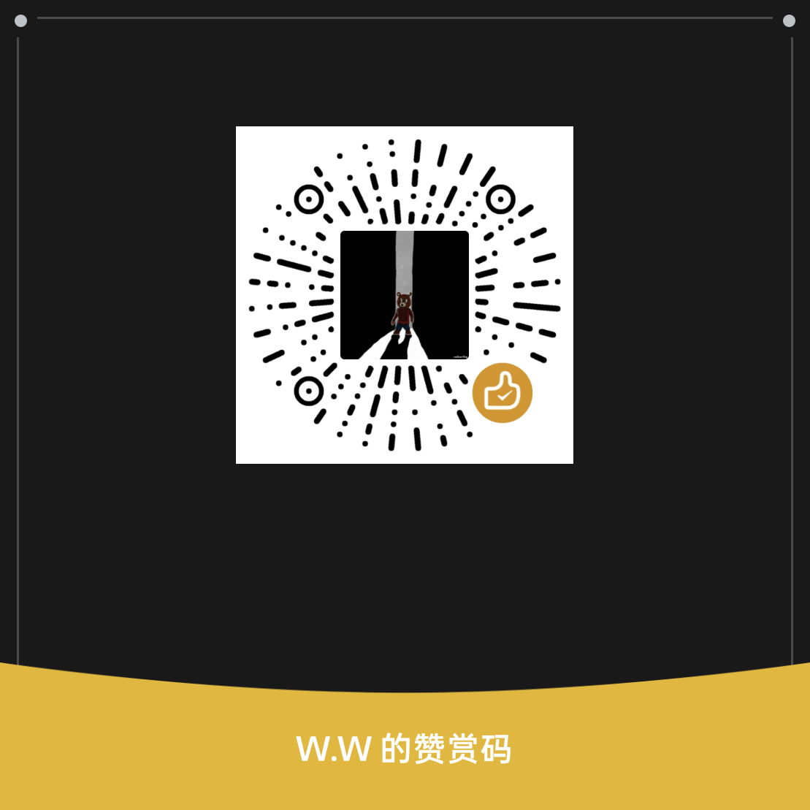

嗨，我是 AirSend 的开发者。
它最初只是想解决一个很具体的烦恼：为什么 Mac 和 Android 之间传个文件、复制一段文字，要绕这么多路？
如果 AirSend 曾让你少用一次“文件传输助手”，让截图和剪贴板自然地出现在另一台设备上，或者在难搞的校园网里终于把文件传了过去——那就请我喝杯咖啡吧。
金额不重要。看到有人真的在使用 AirSend、觉得它值得继续做下去，对我来说就已经很开心了。
AirSend 是一个免费、开源的项目；赞赏只是喜欢它的人，递来的一点鼓励。
嗨，我是 AirSend 的开发者。
它最初只是想解决一个很具体的烦恼：为什么 Mac 和 Android 之间传个文件、复制一段文字，要绕这么多路？
如果 AirSend 曾让你少用一次“文件传输助手”，让截图和剪贴板自然地出现在另一台设备上，或者在难搞的校园网里终于把文件传了过去——那就请我喝杯咖啡吧。
金额不重要。看到有人真的在使用 AirSend、觉得它值得继续做下去，对我来说就已经很开心了。

微信扫一扫 · 谢谢你的支持